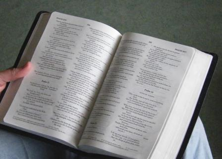

The Bible – God’s living word – has the power to transform lives. When we read it, God speaks to us and in the UK we have easy access to the Bible in English.
However, there are about 7,000 languages in the world, and the whole Bible has only been translated into just over 700 of them.
For more information about translation statistics visit the Wycliffe Global Alliance website
Wycliffe was set up in the 1940s and has grown into the foremost Bible translation agency in the world. They are currently involved in over 2,000 translation projects around the world, bringing God’s word to people who need it.
Wycliffe’s vision is that, by working in partnership with God's people worldwide, everyone will have access to God’s word in the language that speaks to them best.